<body background="images/background.gif">
    <!-- Contents -->
    <h1><center><marquee><font color="#4B0082" size="13">My Flower Gallery</font></marquee></center></h1>
    <center>
        <table border="1" width="1000" height="500">
        <tr>
            <td align="center">
			<a href="https://en.wikipedia.org/wiki/Jasminum_sambac" target="_blank">
				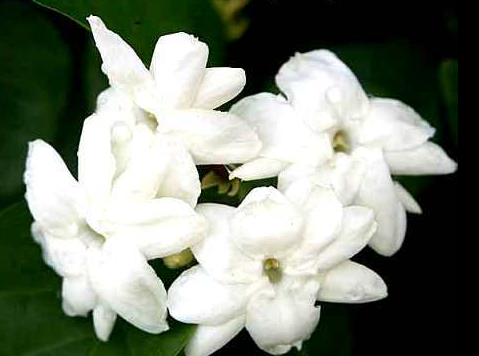<br>
				<center><font color="#001F3F" size="6">Jasminum Sambac
		</td>
            <td align="center">
			<a href="https://en.wikipedia.org/wiki/Rafflesia_arnoldii" target="_blank">
				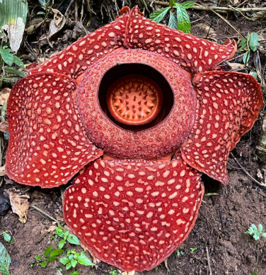
				<center><font color="#001F3F" size="6">Rafflesia Arnoldii
		</td>
            <td align="center">
			<a href="https://en.wikipedia.org/wiki/Anthurium_andraeanum" target="_blank">
				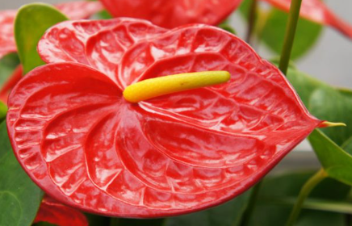
				<center><font color="#001F3F" size="6">Anthurium Andraeanum
		</td>
            <td align="center">
			<a href="https://en.wikipedia.org/wiki/Spathoglottis_plicata" target="_blank">
				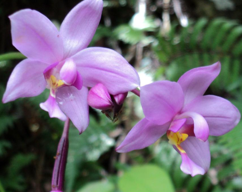
				<center><font color="#001F3F" size="6">Spathoglottis Plicata
		</td>
	</tr>
        <tr>
            <td align="center">
			<a href="https://en.wikipedia.org/wiki/Poinsettia" target="_blank">
				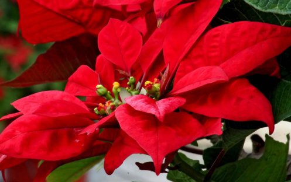<br>
				<center><font color="#001F3F" size="6">Euphorbia Pulcherrima
		</td>
            <td align="center">
			<a href="https://en.wikipedia.org/wiki/Hibiscus_×_rosa-sinensis" target="_blank">
				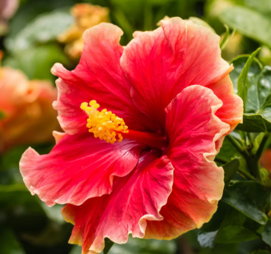
				<center><font color="#001F3F" size="6">Hibiscus Rosa-Sinesis
		</td>
            <td align="center">
			<a href="https://en.wikipedia.org/wiki/Cananga_odorata" target="_blank">
				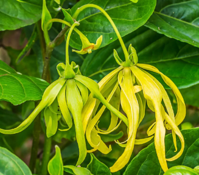
				<center><font color="#001F3F" size="6">Cananga Odorata
		</td>
            <td align="center">
			<a href="https://en.wikipedia.org/wiki/Dendrobium_aphyllum" target="_blank">
				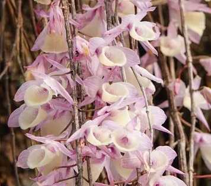
				<center><font color="#001F3F" size="6">Dendrobium Aphyllum
		</td>
	</tr>
        <tr>
            <td align="center">
			<a href="https://en.wikipedia.org/wiki/Medinilla_magnifica" target="_blank">
				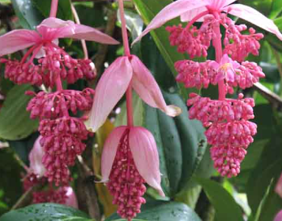<br>
				<center><font color="#001F3F" size="6">Medinilla Magnifica
		</td>
            <td align="center">
			<a href="https://en.wikipedia.org/wiki/Adenium_obesum" target="_blank">
				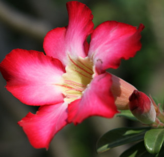
				<center><font color="#001F3F" size="6">Adenium Obesum
		</td>
            <td align="center">
			<a href="https://en.wikipedia.org/wiki/Strongylodon_macrobotrys" target="_blank">
				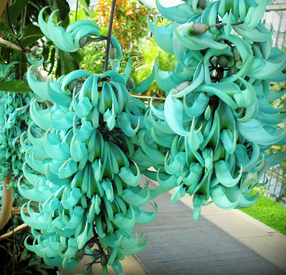
				<center><font color="#001F3F" size="6">Strongylodon Macrobotrys
		</td>
            <td align="center">
			<a href="https://en.wikipedia.org/wiki/Waling-waling" target="_blank">
				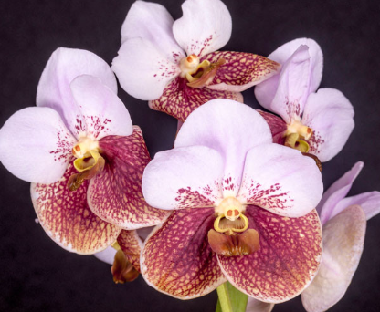
				<center><font color="#001F3F" size="6">Vanda Sanderiana
		</td>
	</tr>
        <tr>
            <td colspan="4">
                <center><font color="#4B0082" size="11">Created by: Naraja Justine Louis
            </td>
        </tr>
        </table>
    </center>

</body>